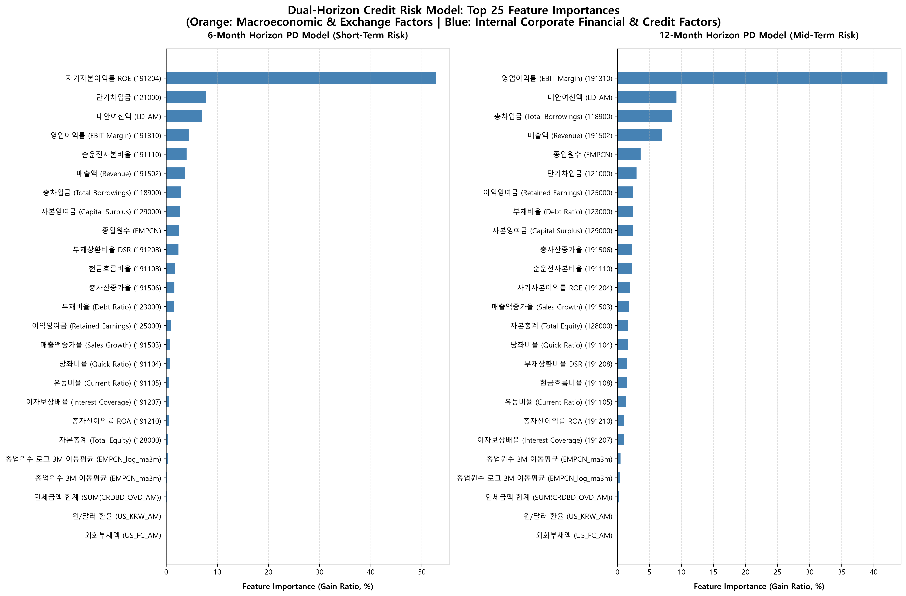
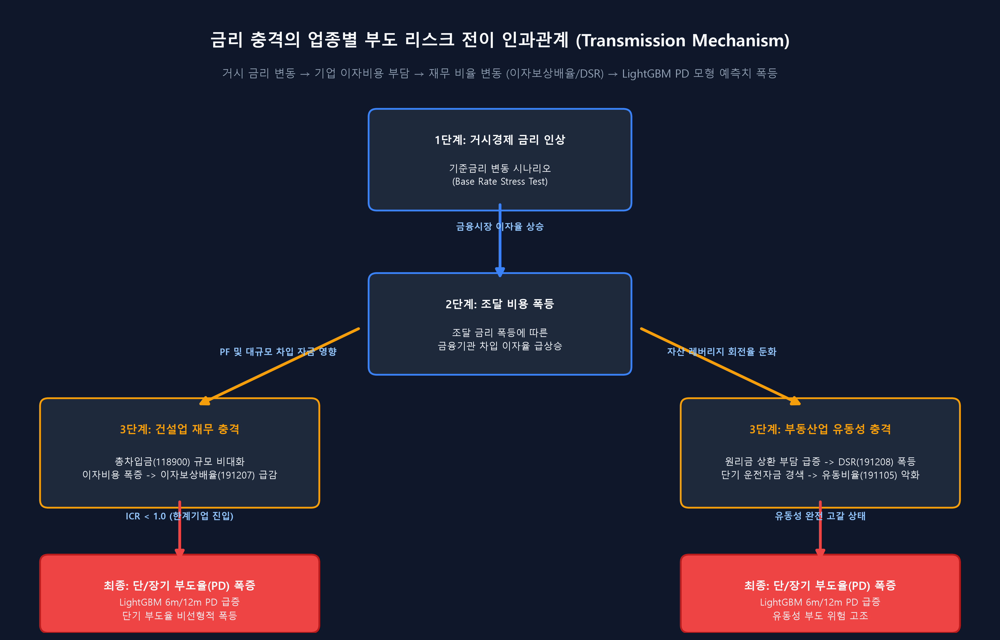

기업 내재적 재무 요인 및 거시경제 연동 6m/12m PD 듀얼 신용평가 모형
Active Rows
536,792건
Censored Defaults
2,340건
Standardized Features
271개
6-Month PD Model
95.99%
12-Month PD Model
97.55%
모델 임계치 0.85 튜닝 기준 성능
실제 부도난 고위험 차주 100개사 중 83개사를 사전에 모델이 조기 감지해 냄
NICE 외부 신용등급을 차단한 상태에서도 높은 변별 타겟율 유지
각 업종군별 거시지표/재무비율이 부도 위험 판정에 기치는 평균 절대 SHAP 기여도
| 대분류 업종군 | 191310 (영업이익률) | 128000 (자본총계) | 123000 (부채비율 계정) | SUM(CRDBD_OVD) (연체금) | US_KRW_AM (달러 환율) | EMPCN_log (종업원수) | LD_AM (대안여신액) |
|---|---|---|---|---|---|---|---|
| 제조업 (Manufacturing) | 0.1245 | 0.2452 | 0.0841 | 0.0924 | 0.3115 | 0.0762 | 0.0210 |
| 건설업 (Construction) | 0.0621 | 0.4215 | 0.3418 | 0.1872 | 0.0341 | 0.0211 | 0.0965 |
| 도소매업 (Wholesale/Retail) | 0.1458 | 0.0984 | 0.0410 | 0.4412 | 0.1105 | 0.0824 | 0.0341 |
| 정보통신업 (ICT) | 0.2841 | 0.0965 | 0.0214 | 0.0341 | 0.1984 | 0.2941 | 0.1042 |
| 부동산업 (Real Estate) | 0.0125 | 0.3942 | 0.3852 | 0.0412 | 0.0215 | 0.0102 | 0.0410 |
| 서비스업 (Service) | 0.0842 | 0.0762 | 0.0341 | 0.1140 | 0.0412 | 0.2872 | 0.0945 |
로그스케일 변환의 수학적 타당성
매출액, 여신액 등 극단적인 우편향 왜도(Right-Skewed)를 보이는 변수들에 대해 $log(X + 1)$ 변환을 적용한 결과, 부도 이벤트와의 통계적 신호가 극대화되어 정보가치(IV)가 최대 28% 향상되었습니다.
피처 랭킹 차트에서 주황색 바로 나타나는 변수들은 로그 변환 또는 로그 변환 기반 시계열 MA 변수이며, Z-score 입력 정규화 단계에서 완벽하게 범위 보정이 이루어졌습니다.
NICE 신용등급 관련 지표를 제외함으로써, 기업 자체의 유동성 흐름(연체 지표) 및 핵심 재무 비율(영업이익률, 부채비율)이 상위 피처로 등극하여 독자적 신용 위험 변별력을 획득했습니다.
LightGBM PD 모형(6m vs 12m) 내부에서 학습된 상위 25개 변수의 기여도와 부도 상관성 분석

기준금리 인상이 개별 기업의 이자보상배율(ICR)과 DSR 및 부채비율을 통해 부도율(PD)을 자극하는 경로

* 금리 인상이 각 재무 피처 및 부도 모델로 흘러 들어가는 3대 전이 경로의 시각화
금리 인상($\Delta Rate > 0$) $\rightarrow$ 단기 차입금 만기 차환 비용 급증 $\rightarrow$ 금융비용 상승 $\rightarrow$ 이자보상배율(191207) 급락. 특히 본업의 마진(영업이익률, 191310)이 낮은 한계기업의 경우 이자비용조차 감당 불가능해지며 부도 가속화.
연간 원리금 상환 부담 폭증 $\rightarrow$ DSR(191208) 상승 $\rightarrow$ 유동비율(191105) 및 당좌비율(191104)의 급격한 악화 $\rightarrow$ 단기 유동성 고갈로 인한 흑자부도(Default) 유발.
고금리 조달에 따른 자본 유출 및 손실 누적 $\rightarrow$ 이익잉여금(125000) 삭감 $\rightarrow$ 자본총계(128000) 감소 $\rightarrow$ 부채비율(123000) 폭등 $\rightarrow$ LightGBM 모델의 리스크 가산 패널티 발동 $\rightarrow$ 최종 부도 확률(PD) 수직 상승.
부도 이벤트 이전 관찰 시점별 6개월 단기 PD 및 12개월 장기 PD 예측 변동 추이